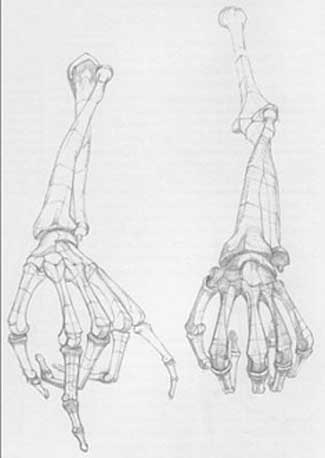
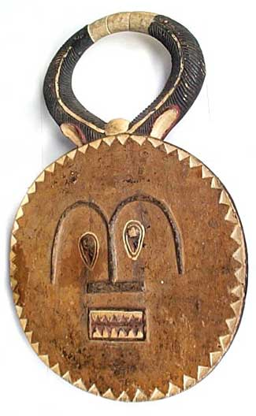
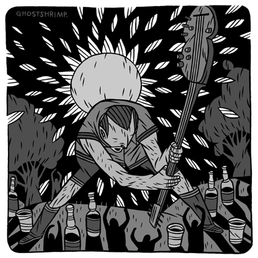
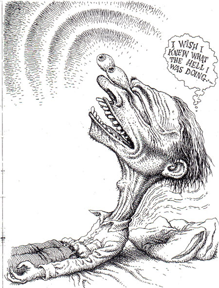
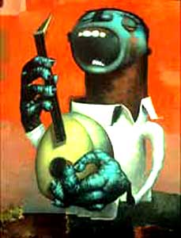
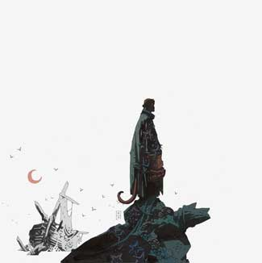

АНАТОМИЯ ДЛЯ ХУДОЖНИКОВ
Шире шаг!
Несмотря на все его затаенные опасности, приходится признать, что художественное образование вещь все-таки нужная. В частности, совсем невредно знать, как устроено человеческое тело, что откуда растет и чем к чему прикрепляется.

Кто не поленится все это срисовать три раза, тому будет счастье.
Дело в том, что из всех выразительных, будем говорить, средств нет более выразительного, чем человеческое тело. Его пластический язык в разы богаче языка мимики и намного реже врет. Не говоря уже о цвете и композиции,если говорить об изобразительном искусстве как о способе передавать информацию или эмоции, то все века его развития добавили не так уж и много к открытиям пещерных людей.

Зяма.ком африканское искусство, разобранное по народностям, не очень кстати, но очень вдохновляет.
Современная иллюстрация, скажем так, не слишком увлекается пластикой,она любитель сделать пятно , нарастить побольше графического мяса, поэтому на отдельное движение, тонущее в общей суете, ей тратить силы невыгодно. Вставать, рисуя стоящего человека и лезть в ванну чтобы нарисовать утопающего нынче не принято. Притом, что современная иллюстрация может себе позволить все, что хочет и довести гротеск до немыслимых пределов, по-настоящему эмоциональных вещей не так много. Бережем себя.

С гротеском, впрочем, не так все просто например, при нужде допустимо сделать ногу длиннее в три, пять, десять раз неважно, нужно нарисовать широкий шаг, значит, чтем длиннее, тем лучше — но при этом, скажем, недоумение выражается наклоном головы к плечу ровно на 7 градусов вперед и на три влево. Я хочу сказать, гротеск сильно выигрывает в сочетании с высокой точностью.

Даже если художник выдумывает собственный мир со своей собственной анатомией, ее-то он должен знать досконально. (Нехудо при этом уметь засасывать туда зрителя. В современной иллюстрации художник сам назначает правила, но и играть по ним ему же.

Можно вовсе отказаться от анатомии, но тогда придется отказаться и от выразительности. Каким-то таинственным образом наше тело, не задействуя мозг, само чувствует как и где напряжены мышцы у нарисованного персонажа, и невольно пытается повторить его позу. Здесь даже неважно заставить зрителя ассоциировать себя с ним, важно, чтобы у него заломило загривок.

Майк Миньола — один из самых мощных рисовальщиков на свете, а то и самый. Главным его достижением я считаю сутулых супергероев.
Это, конечно, вопрос творческой задачи, но ни одна работа не проиграет от того, что станет сильнее цеплять.